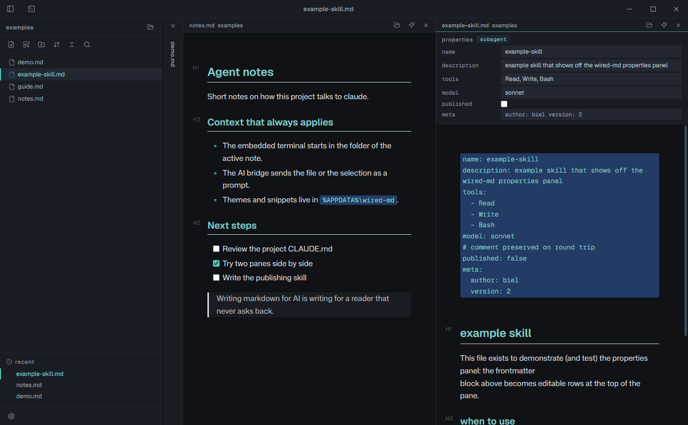

Focus & typewriter F8 / F9
Dim every block but the one you're on, and pin the current line to the vertical center. The dim opacity is measured to hold contrast, not guessed.
A desktop editor for the files that run your agents. CLAUDE.md, skills, prompts, notes. It renders inline as you type, validates your frontmatter, and keeps claude one keystroke away.

Built to write for machines
Not a general note app with markdown bolted on. Every surface is shaped around the files you actually keep in a repo: instructions, skills, prompts.
Typora-style, inline
No split preview, no source pane to babysit. Headings, lists, tables, code fences and links render in place as you type. And a dollar sign stays a dollar sign: R$297 is money, never a stray math formula.
Frontmatter that validates back
The block at the top of a SKILL.md turns into editable fields, and it knows the shape it should have. Skill and subagent schemas flag a missing description, a typo'd key, a model that isn't real. No popup, never blocks a save. A typo in an agent header stops being a silent failure.
Where did I write that rule
A command palette for every action, a quick switcher for files, and full-text search across the folder powered by a bundled ripgrep. Fuzzy, fast, offline. The question "which CLAUDE.md said that?" gets an answer in a keystroke.
The claude bridge
A terminal lives in the bottom panel and opens in the note's own folder. The sparkles on a pane spins up claude, changes into the right directory, and types the file path into the prompt, then stops. You finish the sentence. Selection works the same way.
And the rest of the toolkit
Dim every block but the one you're on, and pin the current line to the vertical center. The dim opacity is measured to hold contrast, not guessed.
Up to four files side by side. The active pane goes wide, the overflow collapses to a 40px spine you click to expand. It reflows with the window.
New files from templates with variables and prompts. Ships with skeletons for SKILL.md, subagents, CLAUDE.md and a dated note.
Obsidian-style theme files that set only the CSS variables, CSS snippets you toggle one at a time, plus live accent, font and size controls.
A real file tree that watches the disk, so a file claude just wrote appears on its own. Context menu, sort, collapse, filter, recents.
Flat .md on your disk. No database, no sync, no plugin marketplace to slow the launch. What the market punishes is what wired-md skips.
Install
wired-md is early and honest about it. Cloning and running is the real path right now; packaged installers are coming.
You need Node.js and git. On Windows, node-pty builds against your toolchain; if the build fails, the app falls back to a piped shell on its own.
$ git clone https://github.com/gabrielsilvestri/wired-md.git $ cd wired-md $ npm install $ npm start
Open a file straight away:
$ npx electron . path/to/file.md
These aren't live yet. When they ship, they'll show up here as real links, not before.
wired-md is built solo, in the open, for free. If it saved you a plugin-config marathon, a coffee keeps the commits coming.